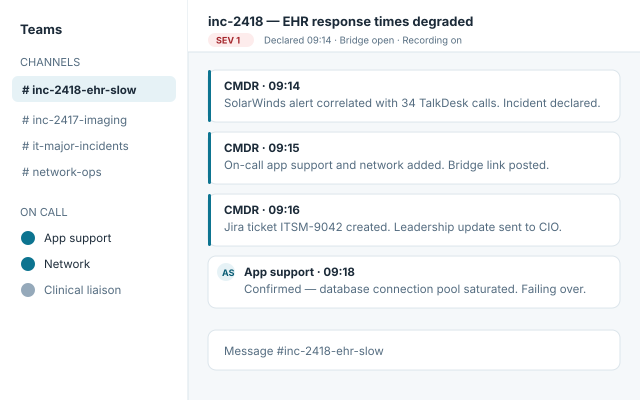
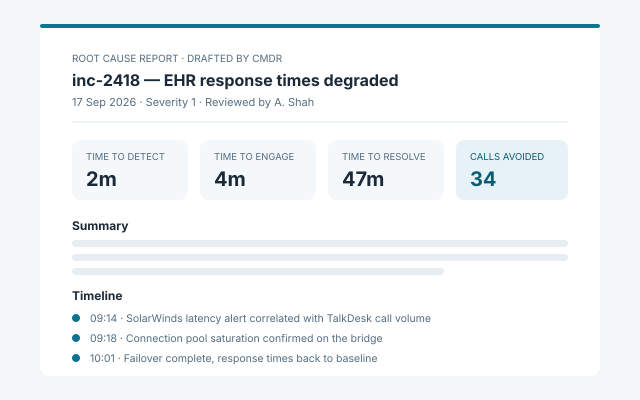

Features
Everything CMDR does, it does inside the systems your hospital already runs - and inside a compliance boundary your security reviewers can sign off on.
Three things a generic incident platform will not give you
A HIPAA-compliant boundary
CMDR leverages AI and machine learning in a fully HIPAA-compliant environment. The models that summarise a bridge call and draft a root cause report run inside that boundary. Atlassian Jira's AI solutions are not currently HIPAA compliant.
Connectors to the systems hospitals run
Jira, SolarWinds, TalkDesk, Microsoft Teams, Outlook and your security monitoring stack - not a parallel tool chain your team has to remember to open during an outage.
A service layer, not an empty platform
We define with you what to measure and how incidents are classified, then configure it. You are not handed a blank platform and asked to invent your own incident taxonomy.
Declare, staff and brief an incident in one step
Trigger the workflow from a monitoring alert, a call volume spike or a single command. CMDR creates the incident channel, applies the severity and classification rules you defined with us, pages the on-call rota for the affected service, opens the bridge and creates the Jira ticket.
Leadership updates go out on the cadence you set, so nobody has to stop working the incident to write an email. Incidents are linked to one another, so a recurring failure is visible as a pattern rather than as five unrelated tickets.

The root cause report drafts itself
CMDR records the bridge and keeps the timeline as events happen, then drafts the root cause report from what was actually said and done. Your team reviews, edits and signs it off.
Report templates match the formats your organisation already files - incident summaries for leadership, RCA tickets in Jira, and the documentation your compliance and SLA reporting require.

Know where your response actually loses time
KPIs where there were none
Time to detect, time to engage the right team and time to resolve, measured consistently across every major incident rather than estimated after the fact.
No single point of knowledge
Every incident and its resolution are recorded and searchable, so the response does not depend on the one person who remembers last time.
The true cost of an incident
Call centre volume, affected clinical services and response hours are consolidated into one view, so leadership can see what an outage actually cost.
Where CMDR takes you over three years
The saving is not only a faster response this quarter. Each phase of the engagement builds the data the next one needs.
Visibility
Every ticketing, call and monitoring source connected. KPIs for major incident response where none existed. Leadership sees the state of the environment and what each incident costs.
Standardisation
Incident bridges, recordings and tickets created automatically. Training built from your own incidents, so new IT staff are productive sooner and the response no longer depends on who is on shift.
Avoidance Phase 5 · on the roadmap
With enough incident history, CMDR identifies the precursor conditions to a major incident and flags them before the outage. Avoiding one significant outage a year more than justifies the investment; every year after that, the saving repeats.
Avoidance is the final phase of the engagement and is not shipped today. It is scheduled for Q4 FY27.
See CMDR on your own incidents.
Book a 30 minute demo.